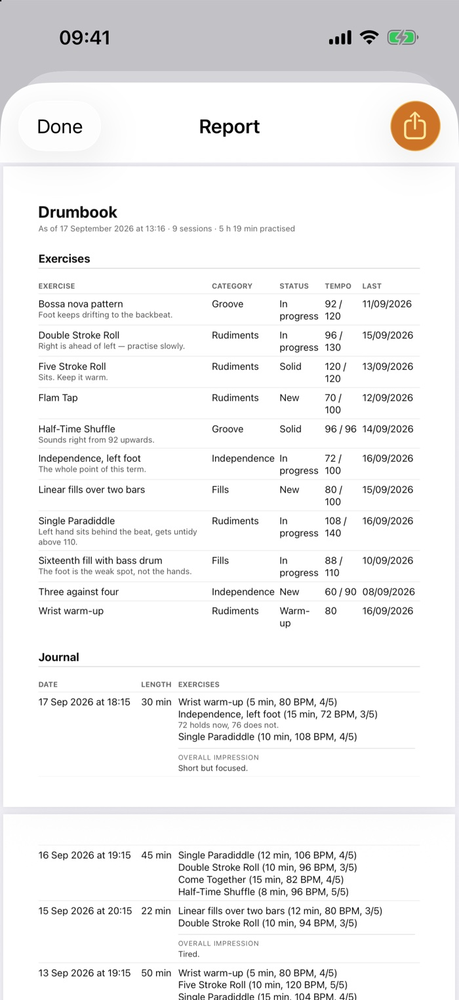

For drum teachers
Know what your students practise at home.
Your students keep their practice journal in Drumbook. They bring a report to the lesson: how much they practised, at what tempo, and what was left lying. You need no app and no account yourself.
What you hold in your hand at the next lesson
A PDF report the student makes with two taps, if they like for exactly the time since your last lesson.
- Page 1 in twenty seconds: days practised, longest run, a practice calendar, time by category. Whether there were gaps, you see before you read.
- Current and target tempo side by side: "96 of 130, up from 92" tells you in one line what ten minutes of asking would not. What you set and what was left lying is there too.
- The student's own notes: "Above 100 it gets cramped". That is exactly where you start the lesson.
- Every session with date, length and exercise, plus the student's own rating for each exercise. Songs stay out: the report shows what was practised, not what was played on the side.

What you set lasts the week
What you set, the student enters together with your assessment. Those exercises come first in their practice list. The sentence that mattered is still there on Wednesday.
Students arrive with questions
Whatever becomes unclear while practising, the app collects. At the next lesson the questions are at the top of the screen, and you start with three concrete points instead of searching.
No effort for you
You need no iPhone and set nothing up. The report reaches you printed or by email. The practice data stays with the student, on their device and in their iCloud; what you see, they hand you themselves.
Good to know
Drumbook is one student's practice journal, not a platform for a whole music school, so there is no overview of several students. It is built by someone who is learning the drums themselves; testing is under way through TestFlight, Apple's own app for test versions. What is finished and what is still to come →
Material for your lessons.
An A5 flyer to hand out and a poster for the notice board at your music school, both with a QR code to this website. Plus this page as a sheet, in case you want to tell colleagues, and a sample report with made-up data, so you can see what your students will bring you.
Student flyer (PDF, A5) Poster (PDF, A4) Sheet for teachers (PDF) Sample report (PDF)
A note for parents.
To pass on by email or messenger. Change it to suit your lessons.
Template
Dear parents,
For practising at home, I recommend the app Drumbook. It puts together a short practice list every day, sets the tempo with its metronome and keeps track of what was practised and for how long. Before the lesson your child turns that into a report, so I can see what we should work on next.
Drumbook runs on iPhone and iPad. It needs no account, and the practice data stays with your child, on their device and in their iCloud. There is a free test at the moment; later the app will be a subscription of €3 to €5 a month. There are no ads.
You can request an invitation to the test at drumbook.de.
Best wishes
Try it yourself.
Try Drumbook before you recommend it. With an iPhone or iPad it is free through TestFlight. Leave your address and you'll get an invitation. That is the only email you'll get from me, and then I delete the address.
My students are minors. What about data protection?
Drumbook has no sign-in and no server of its own. The practice data lives on the student's device and in their own iCloud. Neither you nor I see any of it unless the student hands you the report. Privacy in detail →
What does Drumbook cost my students?
Nothing while in testing. Once Drumbook is in the App Store it will be a subscription of €3 to €5 a month, much cheaper by the year, with every feature and no adverts.
What about students with an Android phone?
Drumbook comes to iPhone and iPad first. Android is planned; there is no date yet.
Do I have to teach any differently?
No. You set work as always, the student enters it. What changes: they arrive with a report and with questions.